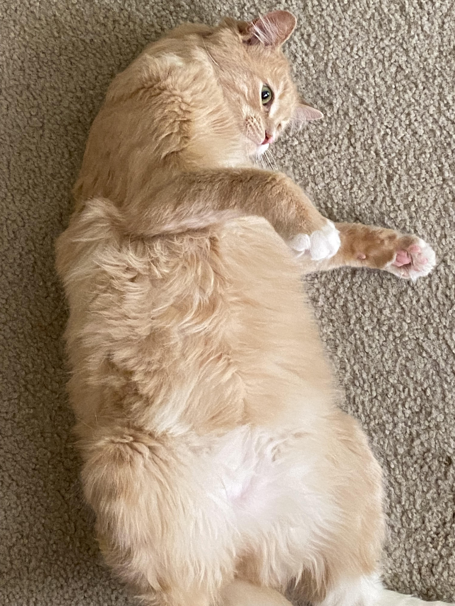

Breeds
So you're looking for a cat, but dont know what breeds there are and how they'd act.
You need to see what they look like, how they act, where to find them, etc. So let's start
looking! The 3 best breeds will be shown here!
Ragdoll
The Ragdoll is a cat breed with beautiful fur and much known for its amazing blue eyes.
Their fur is very soft, they can also be very affectionate. These cats can be a good company
for children and familys. Overall very friendly, loving and gentle with their owner.

Scottish Fold
The Scottish Fold is a breed of domesstic cat which is very gentle, quiet, very loving and affectionate.
Mostly known for the way their ears "fold", which gives the cat an "owl-like" appearance. They can be easy going
and overall very friendly, best for household pets. Also adore human attention.
Persian Longhair
The Persian Longhair is a cat breed that is mostly known for its adorable face amd short muzzle.
One of the cutest cat breeds, even though all cats are cute right? Can be a varaity of colors and very beautiful.
Mostly sweet and well known for how adorable they look.

My Expeirence
During 2021, I had gotten my first kitten. My father had rescued him from a road he drove to get back from work, with my mother.
The two saw the kitten come towards them and my mother adored the kitty. He was so small and blonde, with beautiful blue eyes and
the softest fur I've ever touched. My mother had sent a picture to me while she was on her way home with my father, the two had bought
a tower the kitty could sleep on. As soon as the two came home with the kitty, my world changed. (REAL.) I became a more understanding
person, but shortly after the kitten got sick. He started to hide from us and refused to eat, I'd cry everytime we left the house to Find
something that could help the kitten. We took the kitten to the vet and shortly after a while, the kitten had an infection. This accured (
according to the vet) that we did not clean its litter enough. No one stayed home during the kittens stay at our house, so no one would
help him. I'd try to make an effort and change it's water and food everyday, but school had been draining me. The vet charged us
3000 dollars to help our kitten. He was suffering and had a small surgery done on his stomach, that had puss inside. We would have
to make an effort to help. The vet gave us medicine and told us to look after it everyday. A couple weeks passed with our daily visits,
and the kitten started to get better. His surgery wound was healing and he started to play more. This was a relief to find out he was
doing better. This event felt like I was losing a family member of my own. The pain was unbearable, to live and see something you love
pass away hurts so much. After this happened, I cherished every moment with anyone like a diamond I could lose in a sewer. Happy memories
create a positive enviornment for head, though when that person is gone, it hurts. To relive those moments in your own head create an
unbearable pain, a deep sorrow that hurts forever. But it'll be okay.
Heres a picture of my cat!!
